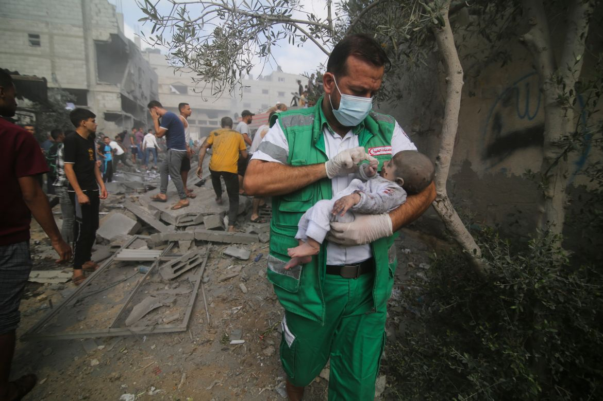

Survival System In Gaza

Survival ,Resilience and Solidarity:
Our Relief Efforts in Gaza
__________________________________________________________
By Maureen Simpson
Now over four months , in the humanitarian crisis in Gaza has
reached catastrophic levels, with one in four
households facing
famine levels of food insecurity and severely limited access to
safe water.
"Our mornings begin with a silent check- are the kids, is everyone,
alright ? " said Mohammad,one of 74 staff members
from Global
Communities who is still on the ground in Gaza and the West Bank.
"Our needs have undergone a profound transformation . the
priorities of our past seem distant now our focus is
singular-survival ."
Of the more than 1.7 million people who have been internally
displaced by the war between Israel and Hamas ,
many are staying
at ouvercrowded shelters or on the streets . The United Nations
warns that hunger end starvation ,
dehydration and illness will
continue to increase as significant damage has been inflicted upon
critical infrastructure
and essential health and sanitation services.